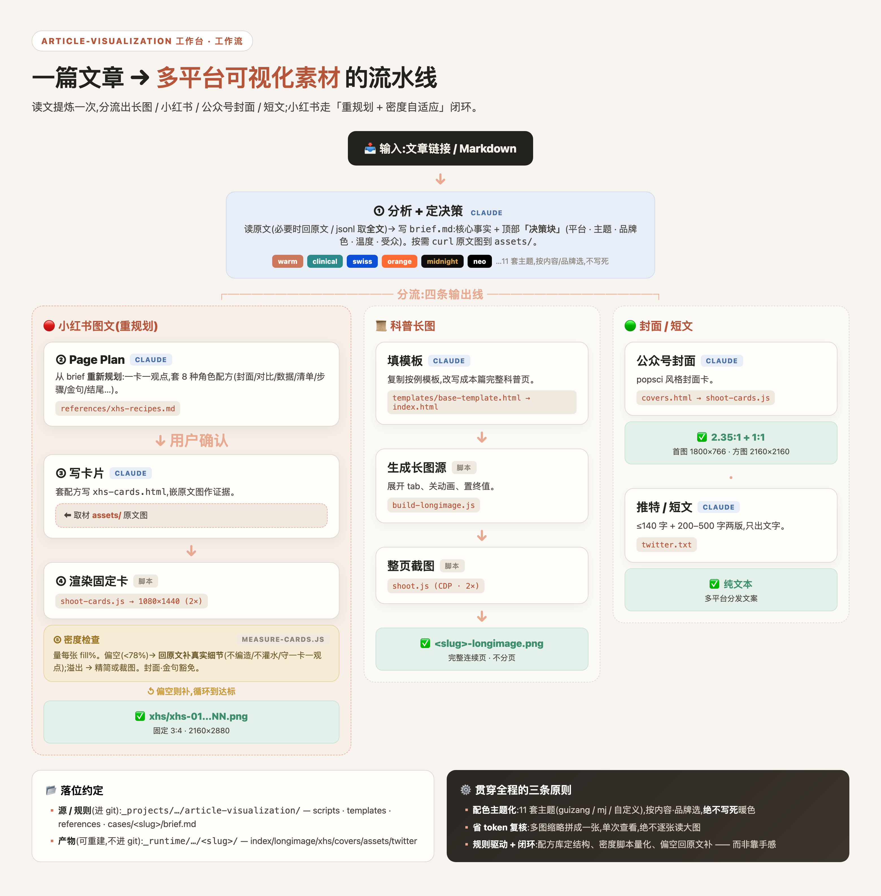
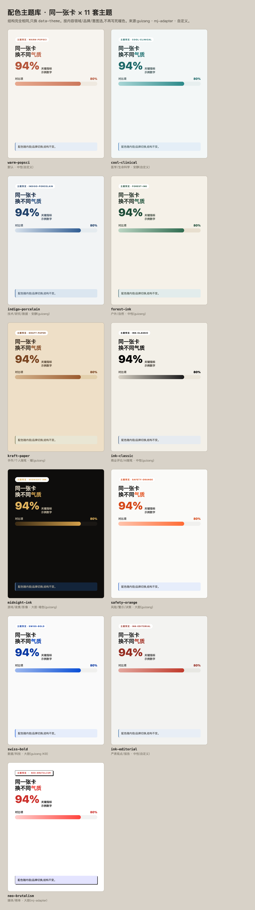

科普长图
连续 HTML 页面和 2x 长图截图，适合完整解释一篇文章的主线。
文章 / 研究博客 / 论文
把专业文章重新设计成外行也能看懂的科普视觉素材。AI 负责读文、判断、规划和写内容;本机脚本负责渲染、截图和密度检查。
Output split
这个 skill 先把论文或文章压成事实清单和受众决策，再按不同平台重新组织信息密度和视觉结构。
连续 HTML 页面和 2x 长图截图，适合完整解释一篇文章的主线。
一张卡一个观点，按 Page Plan 重新规划，配合密度测量迭代。
生成首图和次图，让文章进入分发前就有可读的视觉入口。
把核心论点压成适合社交平台的短文版本，不丢关键事实。
Workflow
先固定平台、主题、品牌色、受众气质，避免同一批素材长成同一种样子。
回到原文核实事实、数字、图和局限，写成 brief，而不是凭记忆编造。
长图、小红书、公众号封面和短文按各自阅读场景重新设计。
用本机脚本检查卡片填充率，偏空回原文补真实细节，溢出就拆分或精简。

Visual system

医学走冷静临床，数据走瑞士蓝，风险走安全橙，报告走墨刊。用户给品牌色时可以新增自定义主题。
Start here
`article-visualization` 的关键不是直接出图，而是先把事实、受众和平台意图定下来。
使用 article-visualization，读取这篇论文，先提炼事实清单和受众定位，再给我小红书 Page Plan。不要直接渲染。node scripts/build-longimage.js <caseDir>
node scripts/shoot.js <caseDir>
node scripts/shoot-cards.js <caseDir>/xhs-cards.html <caseDir>/xhs
node scripts/measure-cards.js <caseDir>Public boundary
真实 case 目录、下载图片、截图、运行态 HTML 和未发布草稿留在使用者本机。
医学、科学和数据类内容必须回到原文核实，没有的数据诚实留白。
API key、cookie、账号状态、浏览器 profile、`.env` 和私有日志不进入公开副本。